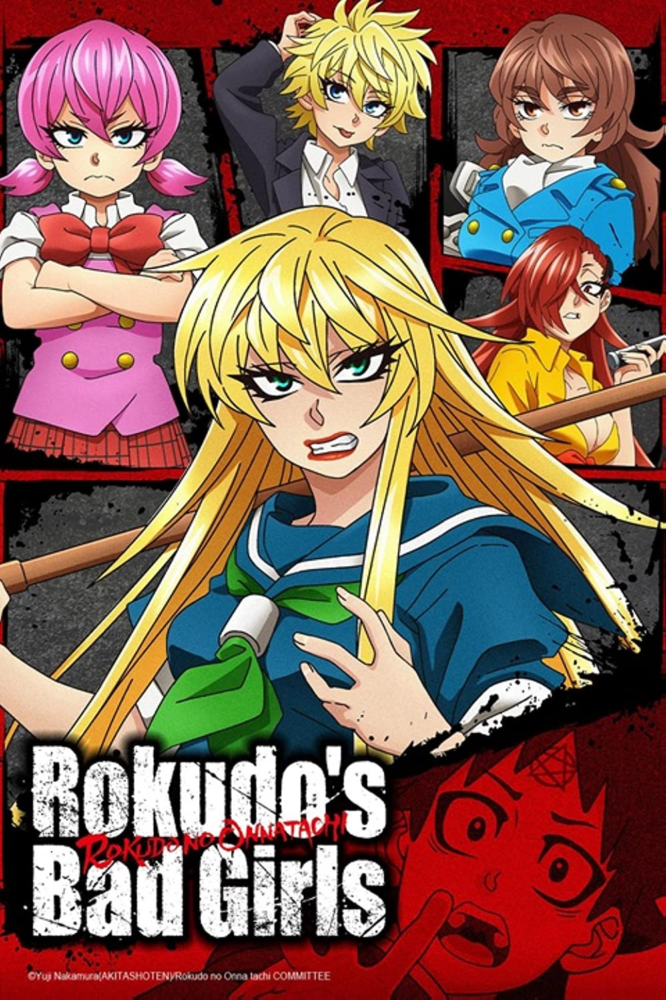
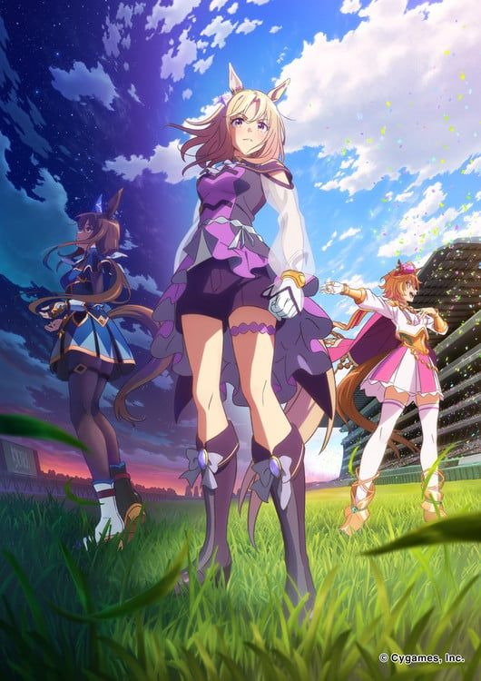

Yuna, una chica de quince años, comienza a jugar su primer juego VRMMO. Ella ha conseguido miles
de
millones de yenes en acciones, y se confina en su casa para jugar sin ir a la escuela. Hoy, una
actualización importante ha llegado al juego y ella obtiene un súper raro e intransferible traje
de
oso.
Pero usarlo es tan vergonzoso que no se atreve a equiparlo, ni siquiera ayuda el hecho de que
solo
es un
juego. Además, cuando responde la encuesta de satisfacción sobre la nueva actualización y
reinicia
el
juego, ella descubre que está en un extraño bosque y está vistiendo el traje de eso. ¿Dónde
estoy?
¿Un
mensaje de Dios? ¿Un mundo diferente? Si ella está usando el traje de oso (que es un objeto
poderosísimo) significa que es invencible, pero si se lo quita es solo una chica normal. ¡La
aventura
que Yuna nunca pidió acaba de comenzar!

Rokudou no Onna-tachi
Tousuke Rokudo, un estudiante de primer año en Amori High, una escuela a la que asisten
principalmente
delincuentes, quiere vivir una vida pacífica con sus amigos. Sin embargo, esto parece ser
imposible
debido al hecho de que sus compañeros de clase delincuentes lo acosan constantemente. Cuando
Rokudo
y
sus amigos se desesperan, Rokudo recibe un paquete misterioso de su abuelo fallecido hace mucho
tiempo.
En el interior se encuentra el uniforme de un sacerdote y un misterioso pergamino transmitido a
través
de su familia desde el período Heian, que se dice que contiene una técnica que protege a los
demonios y
espíritus malignos.

Uma Musume: Pretty Derby
Las protagonistas de la franquicia son las Uma Musume (chicas caballo). Jóvenes con grandes
aptitudes para correr que buscan convertirse en idols y participar en una competencia a nivel
nacional conocido como “Twinkle Series.”
Jigokuraku
El período Edo está llegando a su fin. A Gabimaru, un shinobi anteriormente conocido como el más
fuerte de Iwagakure que ahora es un condenado a muerte, se le dice que será absuelto y puesto en
libertad si puede recuperar el Elixir de la Vida de una isla que se rumorea que es la tierra
pura budista. Sukhavati. Con la esperanza de reunirse con su amada esposa, Gabimaru se dirige a
la isla junto con el verdugo Yamada Asaemon Sagiri. Al llegar allí, se encuentran con otros
condenados a muerte en busca del Elixir de la Vida... así como con una gran cantidad de
criaturas desconocidas, estatuas espeluznantes hechas por el hombre y los ermitaños que
gobiernan la isla. ¿Podrá Gabimaru encontrar el Elixir de la Vida en esta isla misteriosa y
regresar vivo a casa?